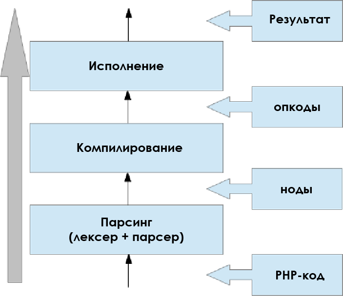

Разное о PHP
Магические методы PHP
- __construct() — метод конструктор, если он объявлен в классе то он будет вызываться при каждом создании объекта. Может принимать одно или несколько свойств.
- __destruct() — деструктор вызывается при освобождении всех ссылок на объект в котором он находится или по завершению работы скрипта. Не может принимать свойства.
- __get() — будет выполнен при чтении данных из недоступных свойств.
- __set() — будет выполнен при записи данных в недоступные свойства.
- __isset() будет выполнен при использовании isset() или empty() на недоступных свойствах.
- __unset() — будет выполнен при вызове unset() на недоступном свойстве.
- __call() — данный метод вызывается при вызове недоступных методов класса.
- __callStatic() —данный метод вызывается при вызове недоступных методов класса в статическом контексте.
- __toString() — позволяет написать реакцию класса при возведении его в строку.
- __invoke() — вызывается, когда скрипт выполняет объект как функцию.
- __clone() — клонирует объект.
- __sleep() — метод вызывается перед выполнением функции serialize().
- __wakeup() — метод вызывается перед выполнением функции unserialize()
- __set_state() — этот статический метод вызывается для тех классов, которые экспортируются функцией var_export()
- __debugInfo() — метод вызывается функцией var_dump(), когда необходимо вывести список свойств объекта. Если этот метод не определен, тогда будут выведены все свойства объекта c модификаторами public, protected и private.
PSR-0 vs PSR-4
Here are the major differences,
1. For example if you define that the Acme\Foo\ namespace is anchored in src/,
-
with PSR-0 it means it will look for
Acme\Foo\Barinsrc/Acme/Foo/Bar.php -
while in PSR-4 it will look for
Acme\Foo\Barinsrc/Bar.php(where Bar class is). 2. PSR-4 does not convert underscores to directory separators 3. You would prefer using PSR-4 with namespaces 4. PSR-0 will not work even if the class name is different from file name, like considering above example: -
Acme\Foo\Bar--->src/Acme/Foo/Bar.php(for Bar class) will work -
Acme\Foo\Bar--->src/Acme/Foo/Bar2.php(for Bar class) will not work
Замыкания и лямда функции
Анонимные функции, также известные как замыкания (closures), позволяют создавать функции, не имеющие определенных имен. Они наиболее полезны в качестве значений callback-параметров, но также могут иметь и множество других применений.
Анонимные функции реализуются с использованием класса Closure.
В пхп замыканием считает любая анонимная функция, которая может использовать переменные из внешнего(для функции) контекста с помощью конструкции use.
$message = 'привет';
$example = function () use ($message) {
var_dump($message);
};
$example();
Как передать функцию как callable?
- Анонимная функция
- Имя функции как строку
- Переменную, содержащую функцию
- Массив вида
[(className || objectName), method name] - Замыкание в котором дернуть метод объекта
- Объект с реализованным методом
__invoke()
Composer
composer.json vs composer.lock
composer.json- содержит допустимые "диапазоны" версий для пакетовcomposer.lock- точные версии установленных пакетов, с которыми работает данная версия(коммит) приложения. Так же в отличие отcomposer.jsonвlockфайл пишутся ВСЕ зависимости которые нужны проекту - например вы зависите от пакета Б, а он зависит от пакета В определенной версии. Пакет В в этом случае попадет в ваш lock файл, и так до конца цепочки зависимостей.
install vs update vs require
composer install делает следующее:
- Проверяет, существует ли
composer.lock - если нет, резолвит зависимости и создаёт его
- если
composer.lockсуществует, устанавливает версии, указанные в нём
composer update:
- Проверяет
composer.json - Определяет последние версии на основе указанных в этом файле
- Устанавливает последние версии
- Обновляет
composer.lockв соответствии с установленными
composer require somePackage:
For example if we want to add a dependency with the command line we will simply execute
- composer.json file will be modified automatically and the new dependency will be added
- the dependency will be downloaded to the project
- http://php.net/manual/ru/class.splsubject.php
Варианты ограничений версий для composer.json
"require": {
"vendor/package": "1.3.2", // exactly 1.3.2
// >, <, >=, <= | specify upper / lower bounds
"vendor/package": ">=1.3.2", // anything above or equal to 1.3.2
"vendor/package": "<1.3.2", // anything below 1.3.2
// * | wildcard
"vendor/package": "1.3.*", // >=1.3.0 <1.4.0
// ~ | allows last digit specified to go up
"vendor/package": "~1.3.2", // >=1.3.2 <1.4.0
"vendor/package": "~1.3", // >=1.3.0 <2.0.0
// ^ | doesn't allow breaking changes (major version fixed - following semver)
"vendor/package": "^1.3.2", // >=1.3.2 <2.0.0
"vendor/package": "^0.3.2", // >=0.3.2 <0.4.0 // except if major version is 0
}
Self vs Static
Позднее статическое связывание сохраняет имя класса указанного в последнем "неперенаправленном вызове". В случае статических вызовов это явно указанный класс (обычно слева от оператора ::); в случае не статических вызовов это класс объекта. "Перенаправленный вызов" - это статический вызов, начинающийся с self::, parent::, static::, или, если двигаться вверх по иерархии классов, forward_static_call(). Функция get_called_class() может быть использована для получения строки с именем вызванного класса, а static:: представляет ее область действия.
Само название "позднее статическое связывание" отражает в себе внутреннюю реализацию этой особенности. "Позднее связывание" отражает тот факт, что обращения через static:: не будут вычисляться по отношению к классу, в котором вызываемый метод определен, а будут вычисляться на основе информации в ходе исполнения. Также эта особенность была названа "статическое связывание" потому, что она может быть использована (но не обязательно) в статических методах.
Говоря проще self - обращается непосредственно к классу, в котором описана ф-ция с его использованием, а static - к классу к которому идет обращение из кода.
Можем ли мы гарантировать выполнения деструктора?
Деструктор не выполнится если:
- Exit вызван в другом деструкторе.
- Если другой деструктор бросает исключение.
- Если мы пытаемся обработать исключение в деструкторе.
- При получении SIGTERM в случае запуска через CLI.
- Fatal Error
Сессии
По умолчанию хранятся в файлах. Но можно переопределить:
session.save_handler = memcached
session.save_path = «tcp://192.1680.10:11211, tcp://192.168.0.20:11211»
Основная функция session_start() - создает сессию, либо возобновляет существующую, основываясь на идентификаторе сессии, переданном через GET- или POST-запрос, либо переданный через cookie.
Когда вызвана функция session_start() или когда сессия создается автоматически, PHP вызовет открытие и чтение обработчиков записи сессии. Это могут быть как встроенные обработчики, так и предоставляемые расширениями (например, SQLite или Memcached); или вообще определенный пользователем обработчик, заданный функцией session_set_save_handler(). Callback-функция чтения извлечет все существующие данные сессии (сохраненные в специальном сериализованном виде), десериализует их и занесет в суперглобальный массив $_SESSION, после чего вернет сохраненные данные обработчику сессий PH
Как выполнить код после exit?
You can use register_shutdown_function() to set a callback function which will be executed when PHP exits.
Отладка и профилировка
Анализаторы кода
- php-sat - Requires http://strategoxt.org/
- PHP_Depend
- PHP_CodeSniffer
- PHP Mess Detector
- PHPStan
- PHP-CS-Fixer
- phan
Сегфолт в пхп фпм, как поймать, как отловить трейс
Ошибка сегментации (англ. Segmentation fault, сокр. segfault, жарг. сегфолт) — ошибка, возникающая при попытке обращения к недоступным для записи участкам памяти либо при попытке изменить память запрещённым способом
Список модулей пхп
php -m
SPL
Стандартная библиотека PHP (SPL) - это набор интерфейсов и классов, предназначенных для решения стандартных задач. Не требуется никаких внешних библиотек для сборки этого расширения, и оно доступно по умолчанию в PHP 5.0.0 и выше.
SPL предоставляет ряд стандартных структур данных, итераторов для оббегания объектов, интерфейсов, стандартных исключений, некоторое количество классов для работы с файлами и предоставляет ряд функций, например spl_autoload_register().
Еще примеры:
declare(strict_types=1);
By default, PHP will cast values of the wrong type into the expected scalar type if possible. For example, a function that is given an integer for a parameter that expects a string will get a variable of type string.
В случае включенного строгого режима будут фаталы при несовпадении типов. Строгий режим действует ТОЛЬКО внутри того файла, где он был объявлен.
PECL
PECL (англ. PHP Extension Community Library) — это репозиторий модулей для PHP, написанных на C, доступных через систему пакетов PEAR. PECL был создан, когда возникла проблема удаления некоторых модулей из стандартной поставки PHP. Модули PECL разработаны в соответствии со стандартами кодирования, которые приняты командой разработчиков PHP.
OpCache
Как работает php-интерпретатор - вначале, написанный нами код разбирается лексическим анализатором. Далее, полученные лексемы, передаются в синтаксический анализатор. Если синтаксический анализатор дал добро, то лексемы передаются транслятору, а он, в свою очередь, генерирует так называемые opcodes (operation codes). И только после этого, в дело вступает виртуальная машина PHP (та самая Zend Engine) которая и выполняет наш алгоритм из получившихся opcodes. Opcodes так же называют эдаким php-шным ассемблером.
Акселератор PHP — расширение для PHP, основное назначение которого — увеличение производительности интерпретатора при обработке сценариев путём кэширования их байт-кода.
PHP — это скриптовый язык, который по умолчанию компилирует те файлы, которые вам нужно запустить. Во время компилирования он извлекает опкоды, исполняет их, а затем немедленно уничтожает. PHP был так разработан: когда он переходит к выполнению запроса R, то «забывает» всё, что было выполнено в ходе запроса R-1.
Очень маловероятно, что на production-серверах PHP-код изменится между выполнением нескольких запросов. Так что можно считать, что при компилированиях всегда считывается один и тот же исходный код, а значит и опкод будет точно таким же. И если извлекать его для каждого скрипта, то получается бесполезная трата времени и ресурсов.

В связи с большой продолжительностью компилирования были разработаны расширения для кэширования опкодов. Их главная задача — единожды скомпилировать каждый PHP-скрипт и закэшировать получившиеся опкоды в общую память, чтобы их мог считать и выполнить каждый рабочий процесс PHP. В результате сильно повышается общая производительность языка, а на запуск скрипта уходит намного меньше времени (сильно зависит от самого скрипта).
OPCache — это расширение, внедрённое в исходный код PHP начиная с версии 5.5.0. Его необходимо активировать с помощью обычного процесса активации через php.ini. У OPCache есть две основные функции:
- Кэширование опкодов.
- Оптимизация опкодов.
Поскольку OPCache запускает компилятор, чтобы получить и закэшировать окоды, то он может использовать этот этап для их оптимизации. По сути речь идёт разнообразных оптимизациях компилятора. OPCache работает как многопроходный оптимизатор компилятора.
Дополнительно:
Демон на php
Применимо к PHP, это скрипт, который может работать самостоятельно, без остановок и без участия пользователя. Как получить такой скрипт? На самом деле, очень просто, нужно лишь нарушить одно из первых правил программирования, которому учат в школе, и создать бесконечный цикл:
// Чтобы программа работала постоянно, она просто должна постоянно работать ;)
while(1) {
// Тут будет располагаться код Демона
// Время сна Демона между итерациями (зависит от потребностей системы)
sleep(1);
}
Что он должен уметь?
- Запускаться из консоли и отвязываться от неё
- Всю информацию писать в логи, ничего не выводить в консоль
- Уметь плодить дочерние процессы и контролировать их
- Выполнять поставленную задачу
- Корректно завершать работу
PCNTL в PHP
Если вы (либо операционная система) прерываете какой-то скрипт (процесс), то никакого "прерывания" не происходит. На самом деле, скрипту (процессу) посылается специальный сигнал "остановиться". В ответ на этот сигнал скрипт может отправить сообщение "подождать", тогда ОС подождет. По умолчанию, если никакого ответа от скрипта нет, он останавливается сразу.
Расширение pcntl позволяет получать и обрабатывать сигналы от операционной системы в PHP скриптах.
Простой скрипт, который перехватывает сигнал окончания работы SIGTERM:
<?
# назначаем обработчик сигнала
declare(ticks = 1);
pcntl_signal(SIGTERM, "sig_handler");
# обработчик сигнала
function sig_handler($signo)
{
echo "\n" . 'received signal ' . $signo . "\n";
}
# бесконечный цикл
while ( true )
{
for ( $i = 0; $i < 3; $i++ )
{
echo '.';
sleep(1);
}
echo "\n";
}
- Инструкция declare(ticks = 1) нужна для инициализации обработки сигналов. Используйте ее в начале каждого скрипта, в котором нужен обработчик.
- pcntl_signal назначает обработчик определенному сигналу.
- В функции sig_handler() мы перехватываем сигнал и обрабатываем его. В нашем примере — просто выводим текст, вместо завершения скрипта.
Если запустить этот скрипт (php test.php), а в соседнем терминале попытаться его прервать командой pkill -f test.php, увидим такой вывод:
den@den:~# php test.php
...
received signal 15
...
...
.
received signal 15
...
Для фоновых скриптов удобно использовать обработчики сигналов, чтобы обеспечить их правильную остановку и перезапуск. Сигналы SIGTERM и SIGNINT используются для прекращения работы скрипта, SIGHUP используется для перезапуска. В PHP обработка сигналов происходит с помощью функции pcntl_signal.
Функция pcntl_fork() создает дочерний процесс, который отличается от родительского процесса только его PID и PPID. Пожалуйста, обратитесь к вашему системному руководству (man) fork(2) для ознакомления со спецификой работы fork на вашей системе. В случае успеха, PID дочернего процесса будет возвращен в родительском потоке (thread) запуска и 0 будет возвращен в дочернем потоке запуска. В случае сбоя, в родительский контекст будет возвращено -1, дочерний процесс создан не будет и PHP сгенерирует соответствующую ошибку.
Получить тело HTTP запроса в PHP
To access the entity body of a POST or PUT request (or any other HTTP method):
$entityBody = file_get_contents('php://input');
Also, the STDIN constant is an already-open stream to php://input, so you can alternatively do:
$entityBody = stream_get_contents(STDIN);
From the PHP manual entry on I/O streamsdocs:
php://input is a read-only stream that allows you to read raw data from the request body. In the case of POST requests, it is preferable to use php://input instead of
$HTTP_RAW_POST_DATAas it does not depend on special php.ini directives. Moreover, for those cases where$HTTP_RAW_POST_DATAis not populated by default, it is a potentially less memory intensive alternative to activating always_populate_raw_post_data. php://input is not available with enctype="multipart/form-data".
Specifically you'll want to note that the php://input stream, regardless of how you access it in a web SAPI, is not seekable. This means that it can only be read once. If you're working in an environment where large HTTP entity bodies are routinely uploaded you may wish to maintain the input in its stream form (rather than buffering it like the first example above).
To maintain the stream resource something like this can be helpful:
<?php
function detectRequestBody() {
$rawInput = fopen('php://input', 'r');
$tempStream = fopen('php://temp', 'r+');
stream_copy_to_stream($rawInput, $tempStream);
rewind($tempStream);
return $tempStream;
}
php://temp allows you to manage memory consumption because it will transparently switch to filesystem storage after a certain amount of data is stored (2M by default). This size can be manipulated in the php.ini file or by appending /maxmemory:NN, where NN is the maximum amount of data to keep in memory before using a temporary file, in bytes.
Трейты
Трейт - это механизм обеспечения повторного использования кода в языках с поддержкой только одиночного наследования, таких как PHP. Трейт предназначен для уменьшения некоторых ограничений одиночного наследования, позволяя разработчику повторно использовать наборы методов свободно, в нескольких независимых классах и реализованных с использованием разных архитектур построения классов. Семантика комбинации трейтов и классов определена таким образом, чтобы снизить уровень сложности, а также избежать типичных проблем, связанных с множественным наследованием и смешиванием (mixins).
Трейт очень похож на класс, но предназначен для группирования функционала хорошо структурированым и последовательным образом. Невозможно создать самостоятельный экземпляр трейта. Это дополнение к обычному наследованию и позволяет сделать горизонтальную композицию поведения, то есть применение членов класса без необходимости наследования.
trait GeneratesDomainEvents
{
private $events = [];
protected function raise(DomainEvent $event)
{
$this->events[] = $event;
}
public function releaseEvents()
{
$pendingEvents = $this->events;
$this->events = [];
return $pendingEvents;
}
}
Мы можем сделать рефакторинг и превратить этот код в абстракцию, но это все равно будет хорошим примером того, как трейты могут работать с локальным состоянием объекта в отличие от статических методов. Мы не хотим работать с массивом событий вслепую или перемещать его из объекта. Возможно, мы не хотим добавлять еще одну абстракцию внутрь модели, и нам, конечно же, не хочется копипастить этот шаблонный код везде. И тут опять нам помогут трейты.
Другими практическими примерами могут служить настраиваемое логирование функций, дамп нескольких свойств сразу или общая итерационная/поисковая логика. Мы могли бы решить все эти задачи родительским классом, но поговорим об этом чуть позже.
И наконец, следует помнить, что трейты не предполагают абстракцию и они не являются композицией, но все равно имеют право занять место среди ваших инструментов. Они полезны для предоставления воздействия по-умолчанию при более мелких реализациях или дублировании кода. Всегда будьте готовы реорганизовать их для лучшей абстракции, как только почувствуете признаки кода «с запашком»
Дополнительно:
Генераторы и корутины
Генераторы предоставляют лёгкий способ реализации простых итераторов без использования дополнительных ресурсов или сложностей, связанных с реализацией класса, реализующего интерфейс Iterator.
Генератор позволяет вам писать код, использующий foreach для перебора набора данных без необходимости создания массива в памяти, что может привести к превышению лимита памяти, либо потребует довольно много времени для его создания. Вместо этого, вы можете написать функцию-генератор, которая, по сути, является обычной функцией, за исключением того, что вместо возврата единственного значения, генератор может возвращать (yield) столько раз, сколько необходимо для генерации значений, позволяющих перебрать исходный набор данных.
Преимущества такого подхода должны быть очевидны. Таким образом вы можете работать с очень большими наборами данных, не загружая их всех в память. Вы даже можете работать с бесконечными потоками данных. Все это также может быть сделано без генераторов, создав класс имплементирующий интерфейс Iterator. Генераторы просто делают это (гораздо) более простым занятием, потому что вам не нужно имплементировать пять разных методов для каждого итератора.
Вся суть генератора заключается в ключевом слове yield. В самом простом варианте оператор "yield" можно рассматривать как оператор "return", за исключением того, что вместо прекращения работы функции, "yield" только приостанавливает ее выполнение и возвращает текущее значение, и при следующем вызове функции она возобновит выполнения с места, на котором прервалась.
Главное преимущество генераторов - это их простота. Гораздо меньше шаблонного кода надо написать, по сравнению с реализацией объекта класса Iterator, и этот код гораздо более простой и понятный. Однако за эту простоту, впрочем, приходится платить: генераторы могут быть только однонаправленными итераторами. Их нельзя перемотать назад после старта итерации. Это также означает, что один и тот же генератор нельзя использовать несколько раз: генератор необходимо пересоздавать каждый раз, снова вызвав функцию генератора.
В PHP 5 генераторы не могут возвращать значений и попытка сделать это приведет к ошибке компиляции. В генераторе может присутствовать только пустой оператор return, для обозначения конца генерируемой последовательности. Начиная с PHP 7 генераторы могут возвращать значения, которые можно получить с помощью Generator::getReturn().
Дополнительно: